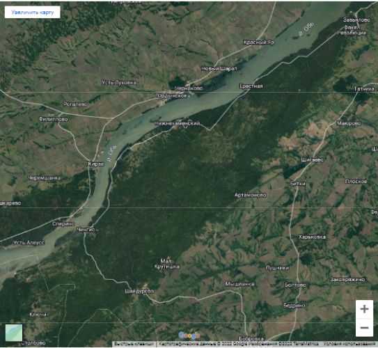

ЛЕСОУСТРОИТЕЛЬНАЯ КАРТА КАРАКАНСКОГО БОРА ОРДЫНСКОГО РАЙОНА НОВОСИБИРСКОЙ ОБЛАСТИ
НАЗНАЧЕНИЕ КАРТЫ
ТЕМАТИЧЕСКОЕ СОДЕРЖАНИЕ
Главные потребители карты – население и узконаправленные сотрудники. Карта служит участковым лесничим, лесникам, охранникам и пользователям леса, сотрудникам различных аварийных организаций по типу МЧС, таксаторам, вальщикам и заготовщикам древесины.
Тематическое содержание включает размещение видового состава древостоя и участковых лесничеств, а также их взаимосвязь с другими элементами карты.
Территория Караканского бора располагается в восточной части Ордынского района НСО и граничит с Новосибирским, Коченевским, Сузунским, Искитимским, Чулымским районами, а также Алтайским краем.
На территории бора находится часть Новосибирского водохранилища протяженностью 86 км, шириной до 4 км и глубиной до 12 м.
Уникальность природы, выгодное географическое положение, развитие рекреационного и хозяйственного использования поспособствовало организации на территории Караканский бора природного парка.
ГЕОГРАФИЧЕСКОЕ ПОЛОЖЕНИЕ
ВИДОВОЙ СОСТАВ ДРЕВОСТОЯ, ПРЕДСТАВЛЕННЫЙ НА КАРТЕ
БЕРЕЗА
СОСНА
Сосна - вечнозелёная красавица. Благодаря ей воздух в лесу целебный и ароматный. Сосны высокие деревья, до 35 м, живут до 400 лет. Листья в виде хвоинок - игл. Стволы внизу с тёмно-коричневой корой, вверху - с красно-бурой и золотистой. У взрослых деревьев в средней части ствола кора красновато-жёлтая и отслаивается тонкими пластинками. Сосна, как и все хвойные растения, не имеет цветков.
Береза - лиственное дерево с тонкими розовато-коричневыми веточками с гладкой корой, покрытой тёмными полосками. Своё название она получила по цвету коры. Корень «бер» означает ясный свет, светлый, белый. Прежде её звали берзой. , а теперь берёзой, берёзкой.
ОСИНА
ЛИСТВЕННИЦА
Осина светолюбивое дерево, оно может достигать 35 м и расти до 180 лет. Стволы внизу с гладкой серой корой, а вверху оливково-зелёные. Листья округлые или яйцевидные, с крупными зубцами. Осину не случайно называют дрожащей. Её листья всё время слегка подрагивают, если даже в лесу тихо, ни ветерка. Осенью листья окрашиваются в различные тона - от золотистых до красных. Цветёт осина в конце апреля - начале мая.
Относится к хвойным деревьям. Продолжительность жизни от 300 до 500 лет. Подобно лиственным породам, сбрасывает хвою на зиму, среди хвойных - большая редкость. Лиственница способна выдерживать сильные холода, она любит сухой воздух и яркое солнце высокогорий. Образует светлые хвойные леса. На ее ветвях можно увидеть шишки трех поколений: нынешнего года, прошлогодние и двухлетние.
КЕДР
ЕЛЬ
Кедр - вечнозелёное дерево до 40 м высотой. Отличается густой, часто многовершинной кроной, с толстыми сучьями. Ствол прямой, ровный буро-серый. Побеги последнего года коричневые, покрыты длинными рыжими волосами. Кедр имеет раскидистую крону и стройный ствол с тёмно - серой растрескивающейся корой. Живёт кедр в среднем 350 - 400 лет. Кедр - единственное дерево сибирской тайги, у которого плоды - орехи.
Ель - вечнозеленое дерево, как и лиственница, относится к хвойным породам. Во взрослом состоянии оно может достигать 30-50 м в высоту, а самые старые ели тянутся вверх на 70 м. Живет ель очень долго, от 300 до 700 лет. Образует темные еловые леса. Осыпающаяся хвоя, постепенно разлагаясь, сильно закисляет почву. Это препятствует развитию многих растений, поэтому в еловых лесах обычно нет подлеска.
КАРАКАНСКИЙ БОР
КАРАКАНСКИЙ БОР НА СНИМКЕ ГУГЛ-КАРТ
